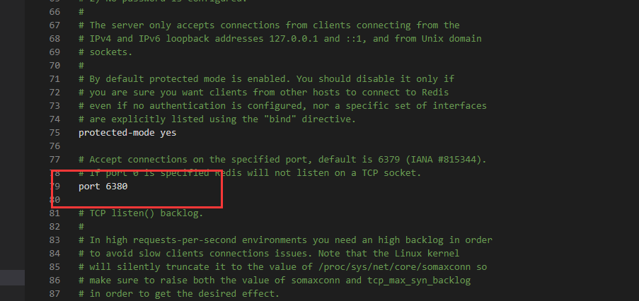
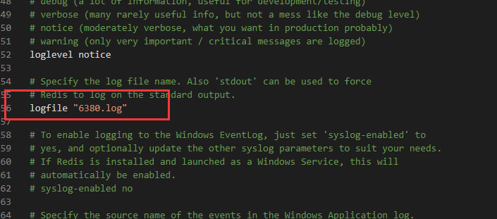
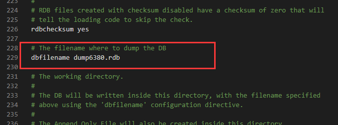
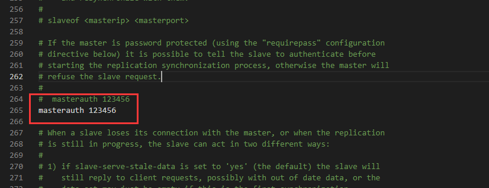

一、config配置文件
复制主机config配置文件 并修改名称为redis6380.conf
二、修改config文件—-从机
端口号

日志文件默认名称

dump.rdb名称

如果主机有密码配置

这样配置多个从机config文件
三、Redis-server
# 1.安装
redis-server --service-install .\redis6380.conf --service-name redis6380
# 2.启动
redis-server --service-start --service-name redis6380
# 卸载
redis-server --service-uninstall .\redis6380.conf --service-name redis6380
|
四、关联主机
127.0.0.1:6380> slaveof 127.0.0.1 6379
127.0.0.1:6380> info replication #查看
# Replication
role:slave
master_host:127.0.0.1
master_port:6379
master_link_status:up
master_last_io_seconds_ago:5
master_sync_in_progress:0
slave_repl_offset:2073
slave_priority:100
slave_read_only:1
connected_slaves:0
master_repl_offset:0
repl_backlog_active:0
repl_backlog_size:1048576
repl_backlog_first_byte_offset:0
repl_backlog_histlen:0
127.0.0.1:6380>
# 主机查看
127.0.0.1:6379> info replication
# Replication
role:master
connected_slaves:3
slave0:ip=127.0.0.1,port=6381,state=online,offset=785,lag=0
slave1:ip=127.0.0.1,port=6382,state=online,offset=785,lag=0
slave2:ip=127.0.0.1,port=6380,state=online,offset=785,lag=0
master_repl_offset:785
repl_backlog_active:1
repl_backlog_size:1048576
repl_backlog_first_byte_offset:2
repl_backlog_histlen:784
|
测试主从
127.0.0.1:6379> set mykey 123
OK
127.0.0.1:6379>
127.0.0.1:6380> get mykey
"123"
127.0.0.1:6380>
|